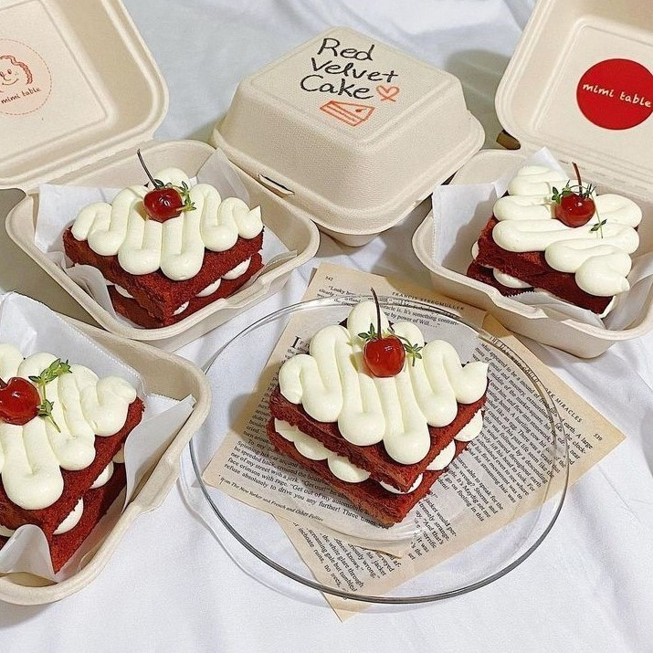
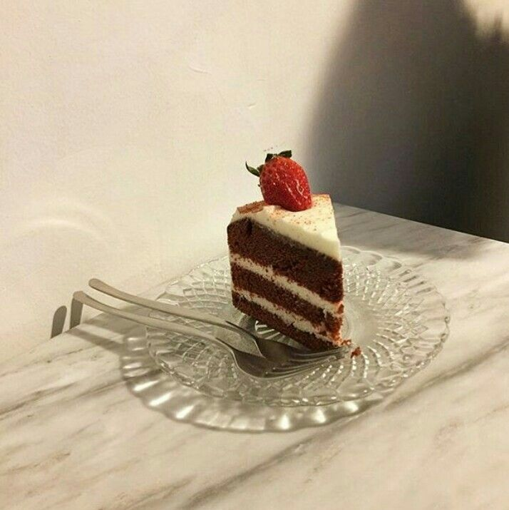

red velvet cheesecake !!
🎀🍰💌🧸
with layers of decadent red velvet cake and rich cheesecake,
this is the ultimate two-in-one dessert when you just can’t decide what to serve for an upcoming event !
this red velvet cheesecake is not only impressive to serve, but surprisingly simple to make.
It’s adaptable to how much effort you want to put in: make the red velvet cake from scratch if you prefer, or use a boxed mix
either way, this cake will wow everyone you know :o


ingredients for the cake :
-
175g butter (unsalted) (softened, plus extra for greasing)
-
150g billington's unrefined golden caster sugar
-
2 egg(s) (free range)
- 115g allinson's self raising flour
- 2 tbsp cocoa powder
- 125ml buttermilk
- 2 tbsp red food colouring (paste)
ingredients for the filling :
-
250g cream cheese (at room temperature)
-
2 tbsp juice of one whole lemon
-
2 tbsp warm water
-
1.5 tsp gelatine (powdered)
- 300ml double cream
ingredients for the frosting :
- 250g cream cheese (at room temperature)
- 60g butter (unsalted) (softened)
- 85g icing sugar (sifted)
- 0.25 tsp vanilla bean paste
method :
- preheat the oven to 180°C (fan 160°C)/350°F/gas mark 4. grease a 20cm (8in) diameter deep cake tin with butter and line the base with baking paper.
- in a large bowl, cream the butter and sugar together until pale and fluffy. beat in the eggs, one at a time, beating well after each addition.
sift the self-raising flour, plain flour, cocoa powder and bicarbonate of soda together, then stir the flour mixture and buttermilk, in alternating batches, into the butter mixture. stir in the food colouring.
- spoon the mixture into the prepared tin and bake in the oven for 35–40 minutes, or until a skewer inserted into the centre comes out clean.
leave to cool in the tin for 5 minutes, then turn out on to a cooling rack to cool completely.
- to make the filling, beat the cream cheese, sugar and lemon juice together in a bowl until smooth. put the 2 tablespoons water into a heatproof jug and add the gelatine.
- place the jug in a saucepan and add boiling water to come halfway up the side of the jug.
stir until the gelatine dissolves (if it seizes, stir gently over a low heat until it dissolves). pour into the filling and beat until combined. whip the cream to soft peaks, then fold into the cream cheese mixture.
- cut the cooled cake in half horizontally and trim the top to level it, reserving the trimmings for decoration.
brush a 20cm (8in) diameter springform cake tin with oil. Line the base and sides with clingfilm, allowing it to overhang the sides. put the cake base, cut side up, into the tin and spread with the filling.
sandwich together with the remaining cake. fold over the clingfilm and leave to set in the refrigerator overnight.
- To make the frosting, beat the cream cheese, butter, icing sugar and vanilla paste together in a bowl until well combined. Turn the cake out on to a serving plate and spread the frosting over the top and sides. Decorate with the reserved sponge crumbs.